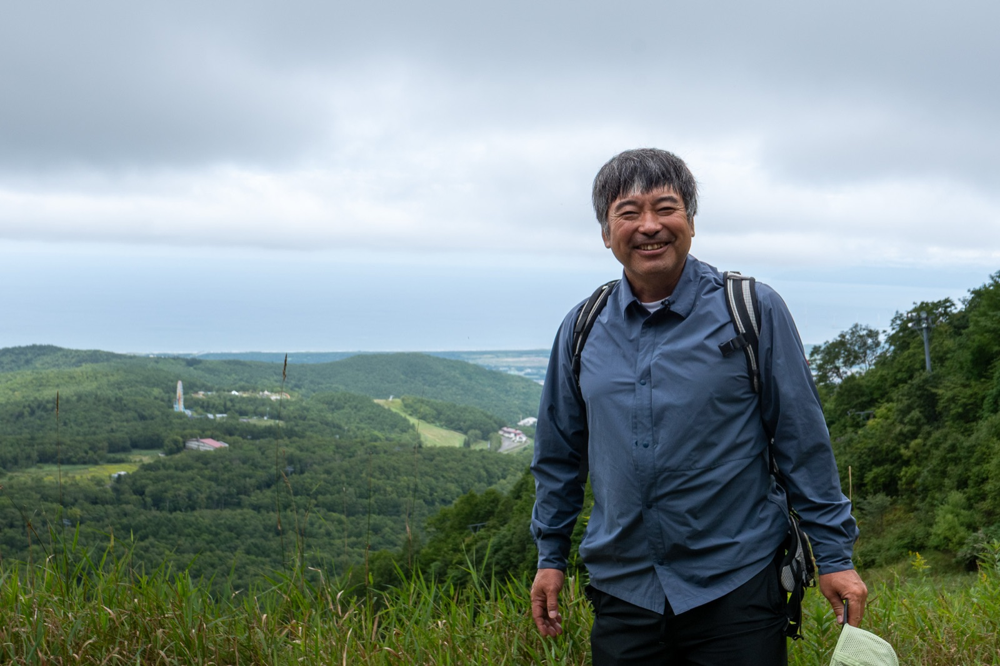
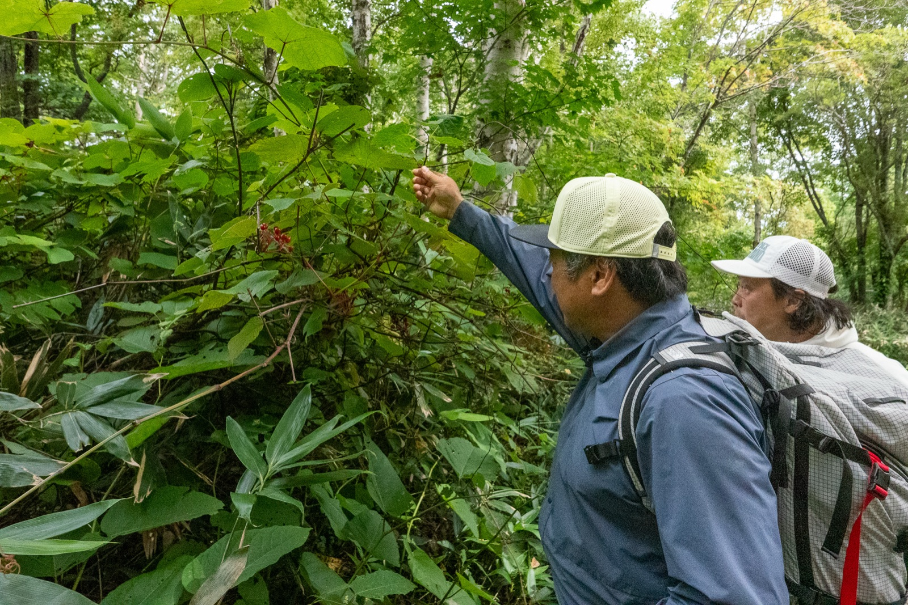
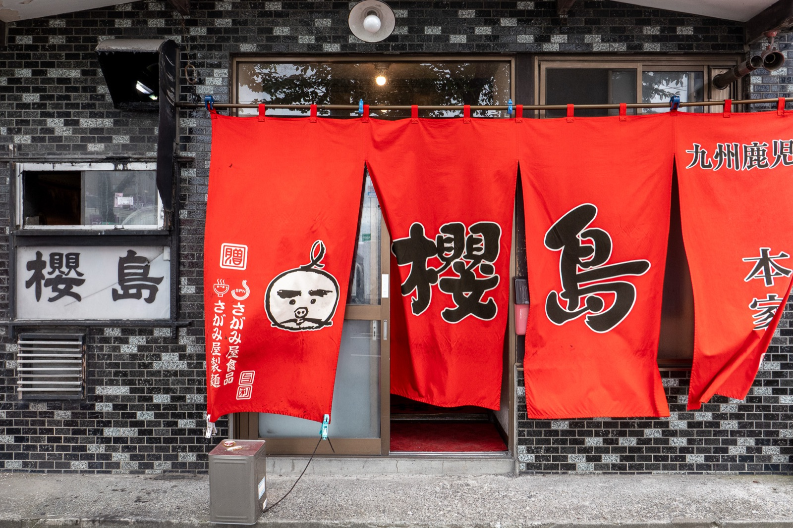
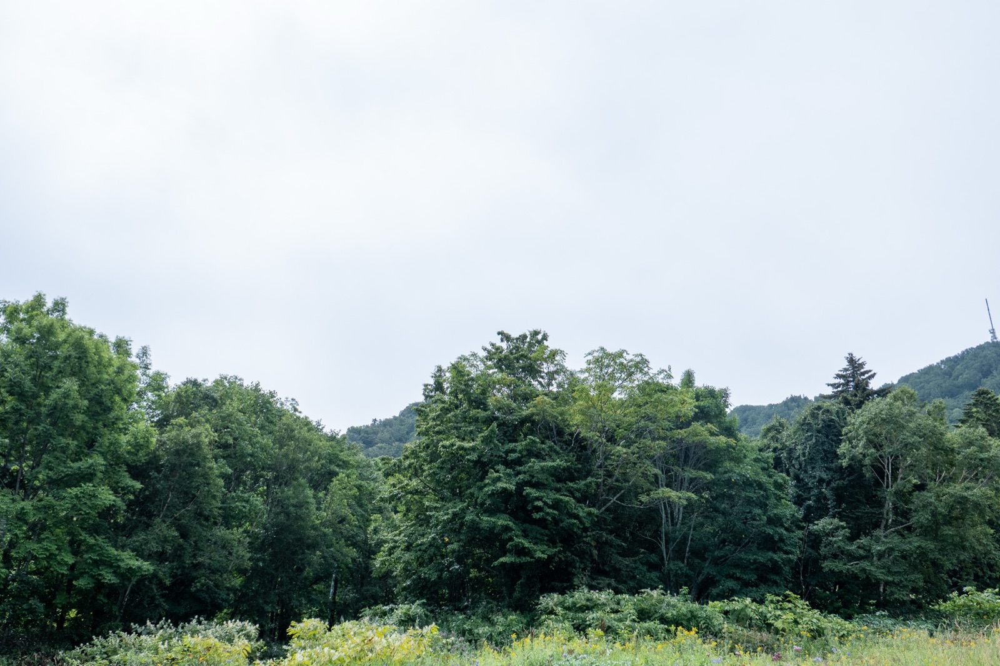

ザサッザシャザザ。札幌での収録から三日後、私は高知県にある猿越山の頂上を目指し、笹の洗礼を受けていた。ひたすら、胸ぐらいの高さの笹を漕ぎ分け前に進む。もう一キロぐらいは漕いでる筈だ。多分。なぜ？短パンで登ってしまったのか、シンプルに痛い。普段から油断が歩いていると揶揄される私でも、流石に事前調査不足を反省した。遠目は笹のカーテンに遮断され、わずかなトレースも頼りない。そんな想定外のハードコアな状況も楽しめてしまうから困ったものだ。足を止め、少し呼吸を整え水を飲む。背中に汗が吹き出すのを感じる。ススッーサーシャー。笹たちを撫でるように顔の横を風が通り抜けた。気持ちいい。涼を追うように、後ろを振り向く。そこには端のない青一色を背景に点在する樹々と土岩の山肌の間を、稜線を繋ぐ蛇のような道がぐねりくねりと伸びていた。天空の林道。私が今朝あくせく紡いだ小さな軌跡だ。そう、道は辿り振り返ることが出来るのだ。「死は勝手に来ちゃうもの。」このフレーズの洗礼も受けた私にとって、その事実はぐったりの五体を実に軽やかにしてくれた。
随想記事
「死を、教えてくれ。」 三浦 豪太
Place: 北海道札幌市・サッポロテイネ
Words: 宮嶋 孝尚
Photo: 宮嶋 良任
ANSwer：死とは勝手に来ちゃうもの

３日前＠札幌。雪のないスキー場はシャッター街の様な終末感の中に迎合を拒むぶっきらぼうな生命力を纏っていた。千歳空港から一時間ほどにあるサッポロテイネ。今回の死の先生（death teacher）馴染みの場所だ。先生である以上当然この男も限りなく死に近づいた経験を保持している。駐車場に到着すると、厚めのエキストリーム体系の男が草木ぼうぼうの斜面を眺めていた。三浦豪太その人だ。その糧を拾いに来たのだ。実業家として三浦ドルフィンを率い、博士として教壇に立ち、登山家としてエベレスト登頂にも成功し、かつてはオリンピアンでもあった。ピカピカである。話すことなどあるのだろうか。きっと彼の功績や逸話はデジタル上でつぶさに転がっている。と思っていた。我々に気づくとわずかに足を引き摺りながら「初めまして。」と右手を差し出してくださった。ごつごつの手と握手を交わし際、彼と目が合う。なんてつぶらな瞳だ。ではなく、あれれとなった。イメージが違うぞ、のやつである。当然私に彼を図れるほどの眼力などない。草食動物程度の直感が指し示したのだ。三浦の目は混じりっけなく純粋に乾いていた。明らかに充足者ではなく渇望者のそれなのだ。俄然興味が、うなぎに上る。恐らくまだ、三浦はカラカラのままだ。何をそんなに求めているのだろう？それっぽい前振りを遮るように、プロデューサーのパンチライン荒井がせわしなく香盤の説明に移った。三浦の原風景であるスキー場を巡りながら語らい、中腹の見晴台でさらに深掘りする。そんな流れとのこと。今回私は何を掴めるのだろうか。朝５時起きの日帰り取材、せめて三浦そのものに少しでも近づけたらいいのだが。そんな企てとは裏腹に、遠くのリフトの向こう側から、ミルク色のガスが少しづつこちらを侵食してきていた。

三浦の隣で、スキー場に生息する草木や各所の説明を受けながらゆっくりとハイクする。満場一致でポジティブな印象を持つはずだ。声色は柔らかく、所作にはよどみがなく、どんな事にも動じそうにない厚みが、初対面であることすら忘れてしまう。積み上げてきた人間だからこそ放てる波動の様なものを、その場にいた全員が感じていたはずだ。テイネの大地に根付く自然は言わずもがな。この地だけはない、いつ何処だって彼らは素晴らしい。クルーを温かいリズムが包む。そんな折「僕は死にたくないんですよ。」と三浦が発した。その後も何度か同じフレーズを言葉にする。流暢に挟み込まれるため、対話のメリハリとはならない。その真意を問へぬまま、１時間ほどで石狩湾を見渡せる中腹まで辿り着いた。大きな白い風車が何本も海から顔を出している。私は何となく石狩のこの変化を三浦の目で見たいと思った。ドカッと後ろで音がした。三浦が荷物を地面に置いたのだ。やけにでかいザックを背負っているなとみんな思っていたはずだ。彼はそそくさと中からウィンドブレーカーやフリースを取り出し渡してくれた。「少し寒くなってきたでしょ。良かったら。」手に取ったそれは、少しぼろく実際に彼が使っていたものだった。強い飾り気のなさが羨ましかった。見晴らし台に即席の対談セットが組まれていく。私は、その様子を見ながら、三浦の先ほどの発言を反芻していた。「僕は死にたくないんですよ。」どことなく違和感を感じていたからだ。よく耳にするフレーズのように思えるが。実際私も似たような軽口を叩いたこともある。だけどどうだろう？ この言葉が本当に当事者化している人って？ 老人や病床に伏せたり、ことがことであれば話は別だが。普通に生きていて、死にたくないと真剣に案じる方が難しいのでは。三浦の発言ということで、極限状態をすり抜けた者達の言霊としてなら、「２度と死にたくない」「死にかけたくない」といった表現の方が妥当な気がする。それ以上に、この言葉には三浦の準備が見て取れた。残したいのか、伝えたいのか。とにかく三浦は死にたくないのだ。その真因はきっと彼の渇きの本質にも繋がっているかもしれない。新しい死の解釈に迫ってそうで、興味が高止まりしなかった。荒井が掛け声を上げ、演者を集める。石狩湾は微動だにせず我々を見つめていた。
全員が三浦の話に引き込まれていた。エベレスト登頂中に死にかけた話を中心にサードマン現象、チームビルディングの難しさ、それをどう乗り切ったかなど、彼だからこそ体験できた濃密な冒険譚が繰り広げられている。対談席に座った彼は、それでは用意していたお話があるのでと、静かにスイッチを入れた。気がした。これまでも三浦の人生録のキャッチーなシーンの切り取りを多くの人は求めてきたはずだ。何度となく彼はこの期待に応えてきたのだろう。間違いなく面白かった。聴衆の合いの手含め、全てがピタッとうまく収まる。未知を求め彷徨う。それを全うしようともがく人間の性はこうも人を魅了するのだ。そんな中、私は可能な限りそちらに組み込まれないよう意識していた。懸命に探していた。漏れそうな、はみ出しそうな、三浦そのものの断片を。自分でも役不足は自覚している。だがやるしかない。私は今、彼の冒険譚の一聴衆ではなく、彼を冒険する冒険家なのだ。私が最初に感じたあの渇きの答えをすくい上げたいのだ。話を聞く中で、三浦に限らず立場や背景問わず大小あるにせよ、人は体験の先にある、歓喜興奮恐怖慈悲その周辺を求め続けた場合、対価はインフレし続ける。つくづくそう思った。彼の渇きの源流もそこに当て込める。そんな気もしたが、どうもしっくりこない。的は外れてるようだ。対談いや独演はあっという間に終わりを迎え、三浦は最後の質問の解もしっかりと置いてくれた。「死とは勝手に来ちゃうもの。」彼の真意はどこにあるのか。ピタピタと順序だてて掴めるなら、こんな場所まで足を運んではいない。日は大分暮れに近づいてるようだ。見渡す限りガスが覆い時間帯を曖昧にする。三浦が最も印象深かった山は、アラスカにあるそうだ。旅の間ずっと白夜でその光景が忘れられないそう。私は白夜を通り過ぎたことがないが、今がそれに近い錯覚を持った。
「お腹空きましたね～。麓におすすめのラーメン屋さんがあるので行きませんか？」三浦のその提案にみんなが乗った。もう少し、彼との時間を味わいたかったのかもしれない。

東京に戻り、粛々と情報を整理し作業を進める。あの場の空気感がズルルと抜ける落ちる前に三浦の核心に迫りたかった。どことなく手応えもあった。感情を理論立てて説明するのは骨が折れるが、三浦はその術を心得ていた。そんなお膳立ての中、もう一歩の所を突き抜けられない状況が続く。彼が理解していて、私が及んでいないこととは。死という現象ついての個人定義を拾い集め立体化する。ひょっとしたら、死が何たるかを指し示せるかもしれない。そんな想いで死を巡る旅は始まった。故に、一つの一つの定義は尊い。【渇望者】・【死にたくない】・【死は勝手にやってくる】。３つの引っ掛かりをボールペンで書き止めてみる。無意識を外れ【勝手に】という言葉に目に留まる。この３文字だけカテゴリーが異なる気がしたからだ。何度か上からなぞり、ペンを置く。目を閉じ、思考を奥へ奥へと進める。思わずポンと膝を打った。と同時に背中にザワザワっと冷えを覚えた。まだ完全に捉えられていない解釈に、脳が追い付こうと必死になっている。三浦の死生観の真ん中に触れたかも。と思える。瞬間だった。解釈は勝手にやってきたのだ。
合点に、寒気が加わったのは自身の死生観が大きく変わる。そんな予感がしたからかもしれない。気づきを、ノートに纏めていく。うんうん。死は勝手にやってきちゃうのだ。望む、望まずに関わらず。この事実は、思ったより凄い話だと思う。死からの逆算。死が、いずれ辿り着く場所、終着点、ゴール。我々は、そんな定められた死に向かって歩いている。生の先に死が待ちわびていると、漠然と思っている人が多いのでは。【勝手に】という３文字は、見事にこの予測をひっくり返している。三浦の死への解釈はこうなのでは。生はいずれ死と接続するが、それは一本道ではない。正面からのんびりと、斜め上から突然、いつの間にか隣に、といった具合に死は勝手に現れる。死を見通すことなど不可能であり、意味もないと。言うなれば、生と死が連なる筋書からの解放に近い。あるのは生のみ。生だけに囚われ、生を全うする。そんなモチベーションは【死にたくない＝生きたい】に繋がってく。三浦が何の迷いもなく言葉にした、僕は死にたくないんですよ。その真意は、結局人は生きるしか出来ない、そんなニュアンスを教えたかったのではないだろうか。私は彼の幾多の冒険＝生から辿り着いた死の個人定義は、現代死生観における重要な一つの解なのではとさえ思った。必然的に、三浦の渇きにも納得が及んだ。そりゃそうだ。生ある限り生きなきゃいけないのだ。生を渇望する、それを生命力と呼ぶなら潤いを求め続ける訳で。彼が止まることなく次の扉を開け続けるのも、生は振り返ることのみを赦し、その赦しは次の生を誘う。たぎり続ける生命力、それを使い切る。三浦豪太、その人の生き様だ。ズーンズーン。頭が重い。少々使いすぎた。どうやら私の集中力は底をついたようだ。ノートを閉じて、再び目をつむる。明日からの高知旅への期待が、気持ちを和らいでくれる。ほっとしたのか、睡魔がどっと押し寄せてきた。

話は高知へ。ようやく笹漕ぎゾーンを抜け、10分ほどで猿越山の頂上に到着した。膝下は傷だらけだ。標高を記した木板が朽ち落ちていた。カシャ。写真に収める。視線を前に向け、景色の抜けを求めたが、私の身長程の雑木が丁度それを遮る。人もあまり訪れていないのだろう、腰を下ろせそうな場所もわずかで野晒しに近い。ザックを下ろし、伸びた雑草を踏み急場の休憩スペースをこさえる。水筒を取り出し、アイスコーヒーをコップに注いだ。グビグビッとのどが鳴る。美味しいを通り越え、体の隅々が喜々と反応し沁み渡っていく。この瞬間は色んな理屈や道理そんなものが無論化し、本能だけが起動している感覚に陥る。フーと長く息を吐いた。三浦のあの笑顔が横切る。対談の中で、どうしても訊ねたいことがあった。
都市で密を生きる人たちが、その汲々さを一瞬でも断ち切るにはどうすればいいですか？と。彼はさも当然でしょのテンションで教えてくれた。山に登って山頂でおにぎりを食べればいいんですよ。思わず笑ってしまった。同調すると同時に、自身が自身を立ち返る時に散々山とおにぎりに助けられてきたからだ。きっと我々は物事を難しく考えすぎているのだろう。ザックからおにぎりをくるんだ手拭いを取り出す。雑木の上に拡がる日差しに目を移す。眩い視線の向こう側には、空がただただ青く生きていた。雲がその様子に微笑んでるようだ。私も、生きている。死を巡る旅はまだ続く。